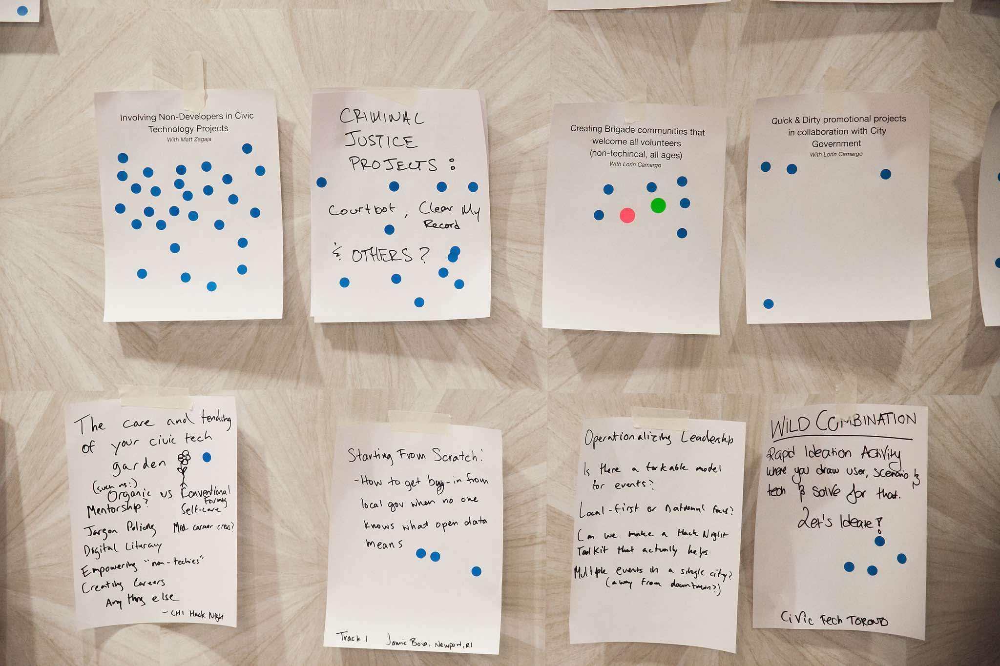

For over 18 years I’ve been fascinated with cities and now, I help make cities better by bringing people together and by designing web applications that solve civic problems. I love to make my own clothes, drink tea and hang out under willow trees.
I was born and raised in San José, California and am a graduate of San Francisco State University, where I studied Apparel Design and Merchandising. Following graduation, I lived in New York, where I worked in fashion production, and as a freelance seamstress and sewing instructor. I realized an interest in community building after taking part in a Civic Hackathon which aimed to solve community issues in Brooklyn, NY.
After moving back to the Bay Area, I have worked as a Council Assistant for Council District 3, the Downtown core, of the City of San José. I have also been an active leader in volunteer-run organizations Code for San José and Catalyze SV, both of which work toward civic improvement through innovation and community engagement.
Contact Me
Public Art Grant-athon
Code for San José’s Public Art Grant-athon was a community event for artists, developers, civil servants, writers, and anyone interested, to come together, design new public art projects, and write the grant proposals to make them happen.
In December of 2017, and with the help of fellow volunteers, I organized and facilitated Code for San José's first ever Public Art Grant-athon.
Being a former City employee and an active member of the community, I knew that the City of San José was regularly looking for new ways to add artwork to the City, and as someone who likes to work on creative projects under a deadline and within teams, I’m a big fan of hackathons.
I thought it would be a great idea to combine the need for more public art in San José with the format of a hackathon, giving the community a welcoming space to meet, form teams, and write grant proposals for their own public art projects.
I realized shortly after coming up with the idea that one of the major grants that I wanted to highlight at the event had a deadline coming up. This meant I had a short amount of time to put the event together, so right away I got to work. I came up with a plan, found a venue to host us pro-bono, planned for food and supplies, created promotional material, reached out to speakers, to the City, and to local organizations and then to the public to get the word out.
Standing there in the early morning on the day of the event, with a room full of slightly confused strangers looking at me to lead the way, I had no idea the day would end with so many warm connections and exciting new projects for the City.
The Pop-up Bikeways Video is a promotional short that highlights the creation of a temporary bike lane in the heart of San José which was made to get the public excited about creating more and better bikeways.
As someone who gets around without a car, I was excited at the opportunity to collaborate with the City of San José on their Pop-up Bikeways Project.
San José is a very car-centric city, with a majority of space taken up by single-family homes, highways, shopping malls and parking lots. I grew up in San José and for me it has always felt like a disconnected place, full of obstacles for anyone who gets around without a car.
Because I’m not alone in this thought, there are several initiatives by the City, by local organizations and by the community to create a more walkable and bikeable city.
I first heard about the Pop-up Bikeways Project from our Brigade Captain at Code for San José (CfSJ). At the time, I had been working with another member of CfSJ to create time-lapse videos of public space and after our videos were shared with City staff, we heard back that there was interest in our work.
We were told that in just two days’ time, the Department of Transportation would be presenting their Pop-up Bikeways Project to the community and its stakeholders, and they wanted us to make a promotional video to highlight the project.
The objective of Pop-up Bikeways was to get the public excited about bringing more bike lanes to San José. It was a prototype created by the City, where staff members spent a day under the sun, spray painting the road, assembling planters and putting up signage to create a temporary bike lane that would be available for the public to use for one week’s time.
Knowing that community support is crucial to creating more and better bike lanes, we were excited to help spread the word about the project and quickly, with a suddenly tight deadline to meet, we got to work on the video.
We used our early mornings, lunch breaks and afternoons to shoot everything we needed and then we stayed up late, editing away at a co-working space to complete the video in time for the community meetings that week.
Standing there at City Hall, with people from the community gathered around road maps and shuffling around the room to talk with each other about better bikeways, Transportation staff was able to use our video to show their work and get everyone in the room even more excited about Pop-up Bikeways.
Unconference Sessions
At Code for America’s Brigade Congress in 2017, I led two Unconference Sessions which tackled the subjects of including non-developers in tech and creating easy-win projects to build partnerships with government.
“We want YOU to go to Brigade Congress” read the subject line of an email sent to a handful of us at Code for San José. The invitation was for a gathering of Code for America brigade leaders that would meet over the span of three days to share stories and talk about how to improve brigades in the future.
The event was described as an ‘unconference’, which was a term I hadn’t heard before, and this meant discussions would be led by participants instead of a pre-selected group of leaders.
Excited and curious at the opportunity, I immediately signed up to attend and, shortly after, I submitted some ideas for the break-out sessions.

I didn’t know that I would actually be leading two of the break-out sessions until minutes before they began at the conference. All of the ideas submitted were posted on a wall for everyone to view, and each attendee was given set of stickers to vote for the ideas they wanted to explore.
As a non-developer involved with civic tech, I thought it would be important to talk about how to better include non-developers in our brigades. I wasn’t the only one who had submitted this idea, though, so on the first day of break-out sessions and with a combined tally of votes, I was partnered up with a leader from Code for Boston and together we eagerly set off to facilitate the discussion.
There was a large turn-out in our meeting room, and we had to keep a strict eye on the time to make sure everyone who wanted to speak had a chance to take the floor. Sitting in a circle with more than 50 brigade leaders from across the country, we talked about what has worked, what hasn’t and how we can apply lessons learned to welcome in people from all skillsets and backgrounds into our tech-heavy community.
With many helpful stories and ideas shared during this first session, the meeting ended with a feeling of excitement and eagerness to experiment with new concepts and continue the conversation between brigades in the future.
I was surprised on the second day of break-out sessions when I heard my name called to lead another discussion, this time for my idea to talk about easy-win projects. I had co-created a promotional video called Pop-up Bikeways that ended up being a great way to connect and collaborate with local government, and thought this would be a great strategy to share for building partnerships. It was an ‘easy-win’ because the project was complete within two days of starting and required no maintenance after it was finished, yet it made a big impact.
With a smaller group than the first day’s discussion, we were able to have an intimate, relaxed meeting with a lot of laughs and unbridled brainstorming.
I left the event after three days feeling excited that I had helped contribute to such a warm, inspiring event where numerous bonds were made and a mix of perspectives were shared, all in the spirit of improving our communities.
Hack Night Presentation
After returning from Code for America’s 2017 Brigade Congress, I presented reflections from the conference at one of Code for San José’s bi-weekly Hack Nights. Sharing with two others who attended the conference, I focused my talk on how we can include non-developers in civic tech.
“Raise your hand if you are not a software developer.”
Almost the entire room was still after I asked this during my presentation to Code for San José. Hands suddenly flew up when I asked for a show of hands by those with at least some coding experience.
It’s not a surprise that most people who show up to Hack Nights are already interested or immersed in tech. The name alone, ‘Code’ for San José, naturally paints a boundary line for most people that says ‘this is a place for coders.’
I often invite new people to come check out Code for San José, and the response is almost always the same: curious interest overshadowed by uncertainty and a fear of not having the right technical skills.
In truth, the overarching goal at Code for America is to creatively solve civic issues. Tech can play a role, but it isn’t a requirement, and for me, this is a very important point to emphasize — because if we want to solve problems in a creative way, we need as many perspectives and skills as possible and we can’t get that from a room exclusively filled with developers.
This is a point that was discussed in great detail at Code for America’s Brigade Congress and is something that I eagerly wanted to share with my fellow civic hackers back in San José.
One idea shared by the Brigade Captain from OpenSTL was that we need to make our definition of civic tech crystal clear. It’s not about tech, it’s about civic engagement, and understanding this can help us make decisions that will welcome in everyone.
But, where do we start?
First, check ourselves. Make sure we are catering to everyone, whether it be language, location, food — and then actively welcome newcomers into the mix.
Our leadership teams need to be diverse so that non-developers can have leaders to relate to, then we need to make sure there are inclusive projects to work on.
We have had some successful ‘no-code’ projects at Code for San José, including Pop-up Bikeways and our Public Art Grant-athon. Other projects were shared by brigades at the event, including one that made a special impact in Orlando, Florida.
Faced with a confusing permit process, Code for Orlando decided to do some journey mapping to translate the Fence Permit Process into something that would be easy for anyone to understand.
With just some paper, pens and post-its, they were able to collaborate with the City and create an illustrated graphic for the public to view and better understand this process at Orlando’s City Hall.
With these examples, I was able to continue this discussion with members at Code for San José and together we were able to brainstorm more ways to weclome in and include non-developers to our community. If you have any ideas for how to create more inclusive brigades, feel free to contact me on twitter or by email at lorincamargo@gmail.com.
City Council Website
Using AdobeXD, Wordpress, HMTL, CSS, and PHP, I designed and built a new website for the District 3 Council Office of the City of San José.
Working as a Council Aide, I had heard a lot of concerns from the community about how frustrating it can be to use the City’s website, which is often described as text-heavy and “clunky”.
This is why, when I was given the job to design and build a new website for Council District 3, I was excited to take on the project and see how I could create a better user experience for community members who want to learn more about the District.
Throughout the process, I met with the District 3 Councilmember, fellow staff members, and the community to figure out what the big priorities would be for the website.
There were three main priorities: providing important resources for the public, making the site easy to use on all devices, and ensuring the website would be sustainable for non-developers in the future.
Residents who stay informed about happenings with local government are more likely to become involved with their community, and one of the best ways for the public to stay informed is by staying up to date with City Council policy memos.
This is why, for the District 3 website, one major goal was to make it easy for the public to search for and find specific policy memos. I did this by creating an interface that separated memos into different categories (e.g. Housing & Renters’ Rights, Arts & Culture, etc.) and organized everything by date. With this, finding specific policy memos will be easier for the public.
Also in the spirit of community engagement, it was important that the website be a resource for residents who want to become more involved in their community. For this reason, we made sure the website included contact information for upwards of 50 Neighborhood Association leaders. This will make it easier for community members to reach out to people already involved in particular neighborhoods to find out how they can become involved themselves.
Also included are resource pages to provide District 3 residents with a quick and easy connection to local organizations and other useful City resources.
For a busy Council Office that won’t have much time to maintain their website, it is important that software updates happen automatically. Knowing this, we decided to use Wordpress to host the website. Along with making maintenance easier, Wordpress also offers a visual editor which makes it possible to update content without touching a line of code.
At the completion of the website, I created a Website Guidebook to help ensure future District 3 Council Staff are able to quickly and easily maintain the website without the help of a web developer.
Using HTML, CSS and PHP, I introduced a grid layout to the existing Wordpress theme, created custom plugins and made sure the entire site would be responsive on all devices.
Renter’s Rights Guide is a web app that helps renters in San José, California understand the laws and programs in place to protect them.
As a member of Code for San José working on the Renter’s Rights Guide project, I have primarily been involved with UX/UI design and visual branding. I have worked within teams to conduct user testing, assess data and strategize to make a more effective resource for the public.
Waiting Room is a mobile app that will keep young people engaged while they wait for mental health services.
Imagine you are a young person seeking mental health services - you've made an appointment to speak with someone but there is a waiting period before you can be seen. How can you remain engaged while you wait for your appointment?
headspace, a pilot program that is soon coming to the Bay Area, will offer stand-alone, integrated care sites for young people ages 12-25 to access early mental health supports. Members from headspace recently presented their upcoming program to Code for San José. Here, they expressed how they want to use technology to improve the services they will be offering to young folks in the area.
After hearing from headspace at our bi-monthly hack night, we spoke directly with the organization to find out more about what might be valuable for them.
We learned that headspace has a maximum 2-week waiting period between scheduling and walking in for an appointment. Knowing this, we decided to create a fun and interactive way to engage young people while they wait for their first appointment at headspace.
Once a young person has signed up for their first appointment at headspace, they will be able to use this app for 2 weeks to log information about how much they are eating, how much they are sleeping and how they are feeling overall.
This information that is logged from the young person will then be transferred to a web application for counselors at headspace to access. This web application will show counselors a list of upcoming appointments, and provide charts to show how each young person has responded to the logging information.
The experience of logging this information each day, and of counting down until the appointment date has been turned into a game where the user can create an image of their own personal waiting room. After logging their information each day, a menu of in-app items (pets, books, backgrounds, etc.) will be unlocked and the user will have the option to add one icon per day to their waiting room.
Each day, the app will count down the days until the scheduled appointment.
Promotional Design
The following were designed for and used by the District 3 Council Office of the City of San José.
Choose Your Win
Choose Your Win is an interactive game that educates girls and women on how to navigate common scenarios that females face in the workplace.
The mission at Hack the Patriarchy is to create innovative solutions for marginalized communities around the world.
As a participant at San José’s first Hack the Patriarchy event, I worked within a team of five to create this prototype game, where a user can navigate the recruitment and hiring process through the character, Rhae.
I collaborated to write and map out the storyline for the game and also designed and illustrated all of the characters and scenes for the game using Adobe Illustrator and Photoshop.
The mission at Hack the Patriarchy is to create innovative solutions for marginalized communities around the world. As a participant at San José’s first Hack the Patriarchy event, Lorin worked within a team of five to create a prototype game that is geared toward educating young females about common scenarios that women face in the workplace. And, hopefully, offer good advice as to how to navigate these situations.
Lorin worked with the team to create the storyline for the game and was also the Designer and Illustrator for the team. She created graphic illustrations for the game, which included a main character, side characters and scenery.
Play the game by clicking here.
Postcard Design
The mission at Hack the Patriarchy is to create innovative solutions for marginalized communities around the world. As a participant at San José’s first Hack the Patriarchy event, Lorin worked within a team of five to create a prototype game that is geared toward educating young females about common scenarios that women face in the workplace. And, hopefully, offer good advice as to how to navigate these situations.
Lorin worked with the team to create the storyline for the game and was also the Designer and Illustrator for the team. She created graphic illustrations for the game, which included a main character, side characters and scenery.
Play the game by clicking here.
Hitchhiking Stop
Choose Your Win is an interactive game that educates girls and women on how to navigate common scenarios that females face in the workplace.
After shooting a time-lapse video of the commute hour at Diridon Station in San José, I teamed up with a software engineer to add pedestrian tracking to the footage, allowing us to count the number of people on the platform at specific times of day.
La Rosa
Inspired by the life cycle of a red rose, I designed and constructed a line of women’s evening wear for the Ignite runway show in Spring of 2013.
La Rosa TEXT HERE
LightHook
LightHook is an interactive lighting system powered by solar panels and built to illuminate the sidewalks of Red Hook, Brooklyn.
The goal of Hack Red Hook is to bring developers, artists, community organizers, and builders to the same table to work together to cultivate neighborhood pride.
As a participant of Hack Red Hook 2016, I worked with a team of six to create a prototype for this playful and sustainable lighting system.
The neighborhood, to the dismay of the residents, was lit by diesel-generated flood lights which polluted the air and disrupted sleep for much of the community.
With the team, I met and spoke with community members as well as local police officers about the current lighting, which was under the control of the NYPD. I also helped design and build the prototype, and co-designed the logo and branding for the project.